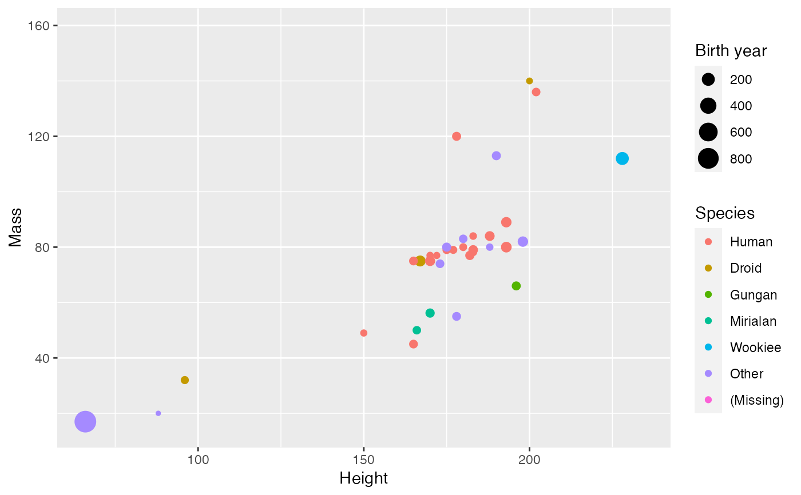

gg_apply_labs.RdApplies the string function fun to each label present in the plot object p. The function, fun`, should accept and return character vectors. It can
either be a simple prettifying function or it can perform more complex lookup
to replace variable names with variable labels
gg_apply_labs(p, fun)A ggplot2 object
A function to be applied to the labels in p
A ggplot2 object with changed labels
Other functions extending ggplot:
gg_apply(),
gg_integer_breaks()
# This uses snakecase::to_sentence_case to prettify the labels
# Note: The plot is assigned to a named variable before piping to gg_apply_labs()
# This is to avoid issues due to the precedence of operators,
# (%>% has higher precedence than +)
library(tidyverse)
library(snakecase)
p <- starwars %>%
filter(mass < 1000) %>%
mutate(species = species %>% fct_infreq %>% fct_lump(5) %>% fct_explicit_na) %>%
ggplot(aes(height, mass, color=species, size=birth_year)) +
geom_point()
p %>% gg_apply_labs(snakecase::to_sentence_case)
#> Warning: 'gg_apply_labs' is deprecated.
#> Use 'gg_apply' instead.
#> See help("Deprecated")
#> Warning: Removed 23 rows containing missing values (geom_point).
